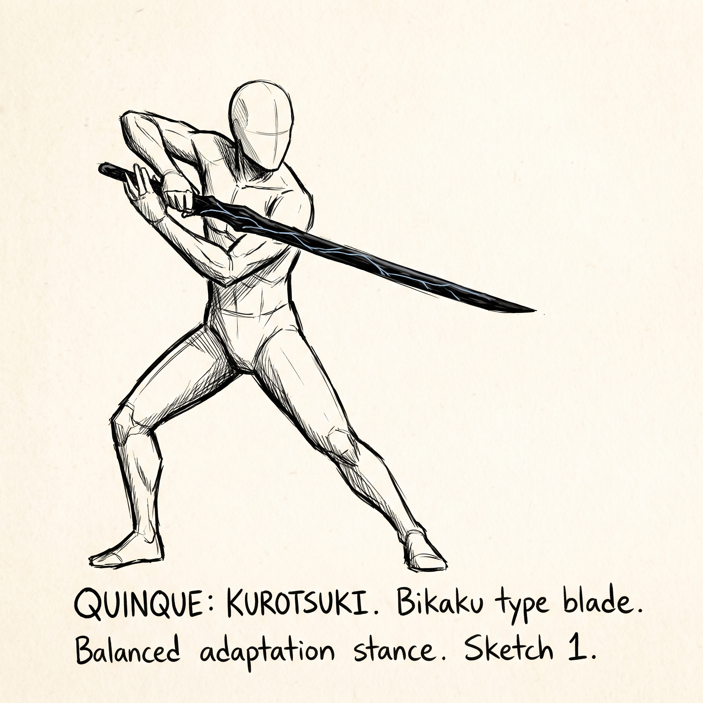
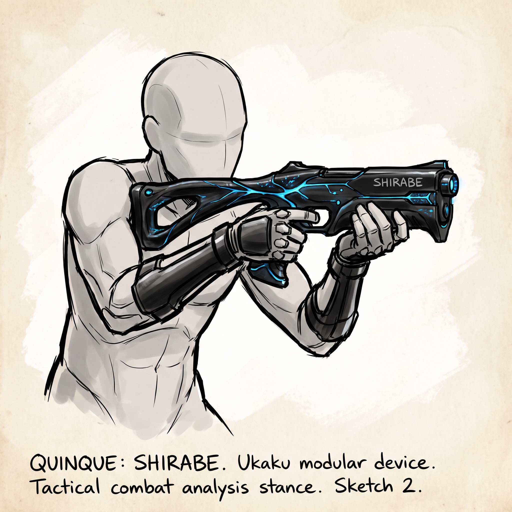
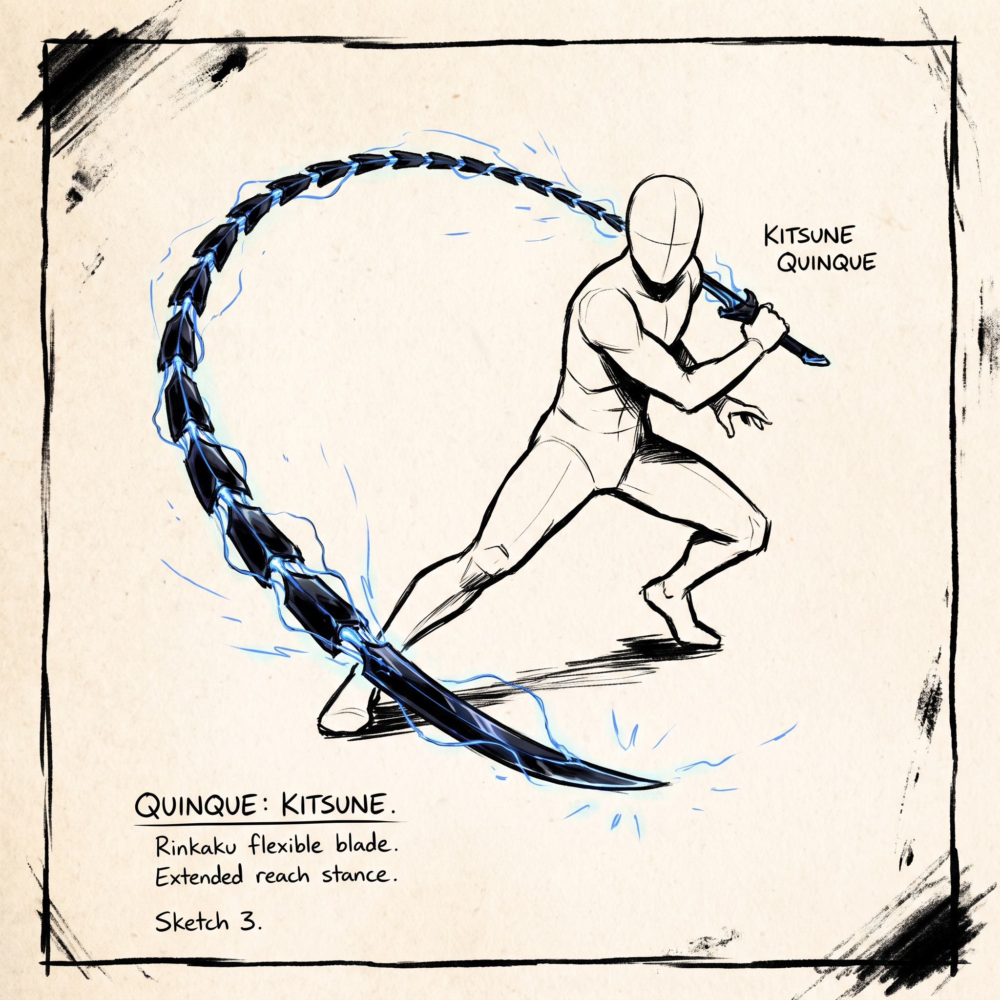
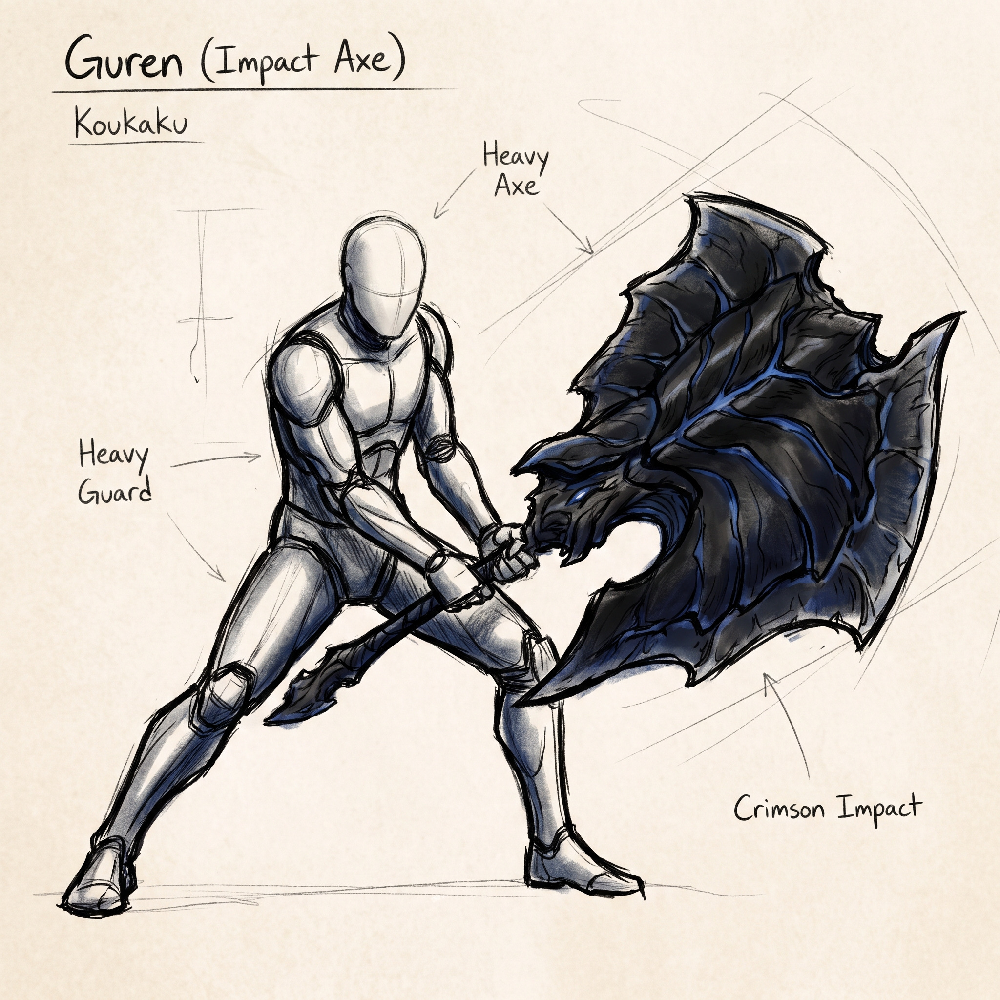
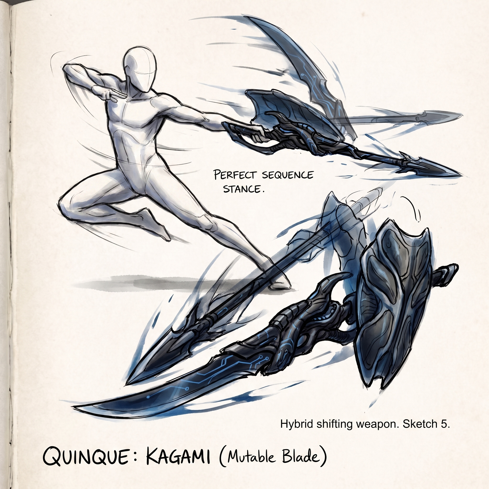
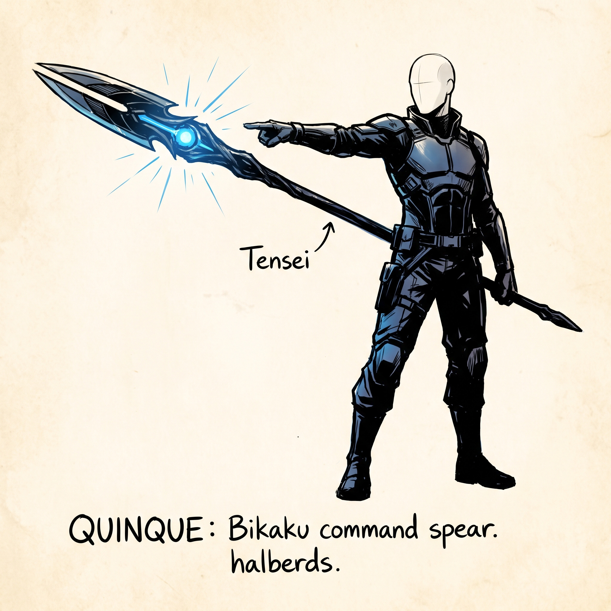
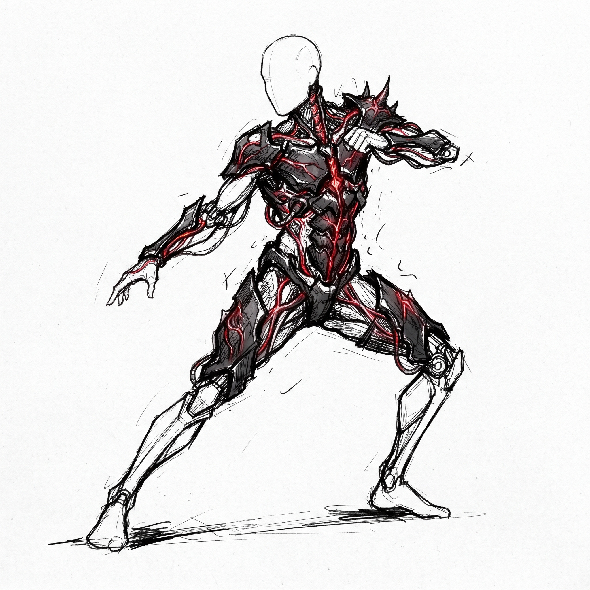
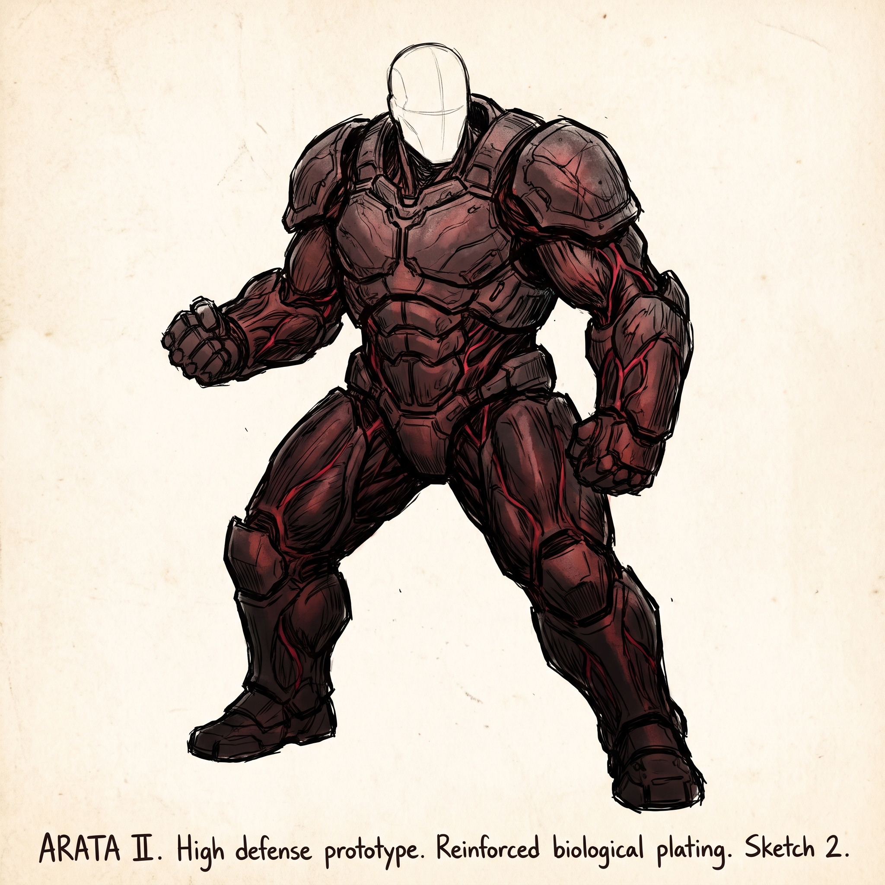
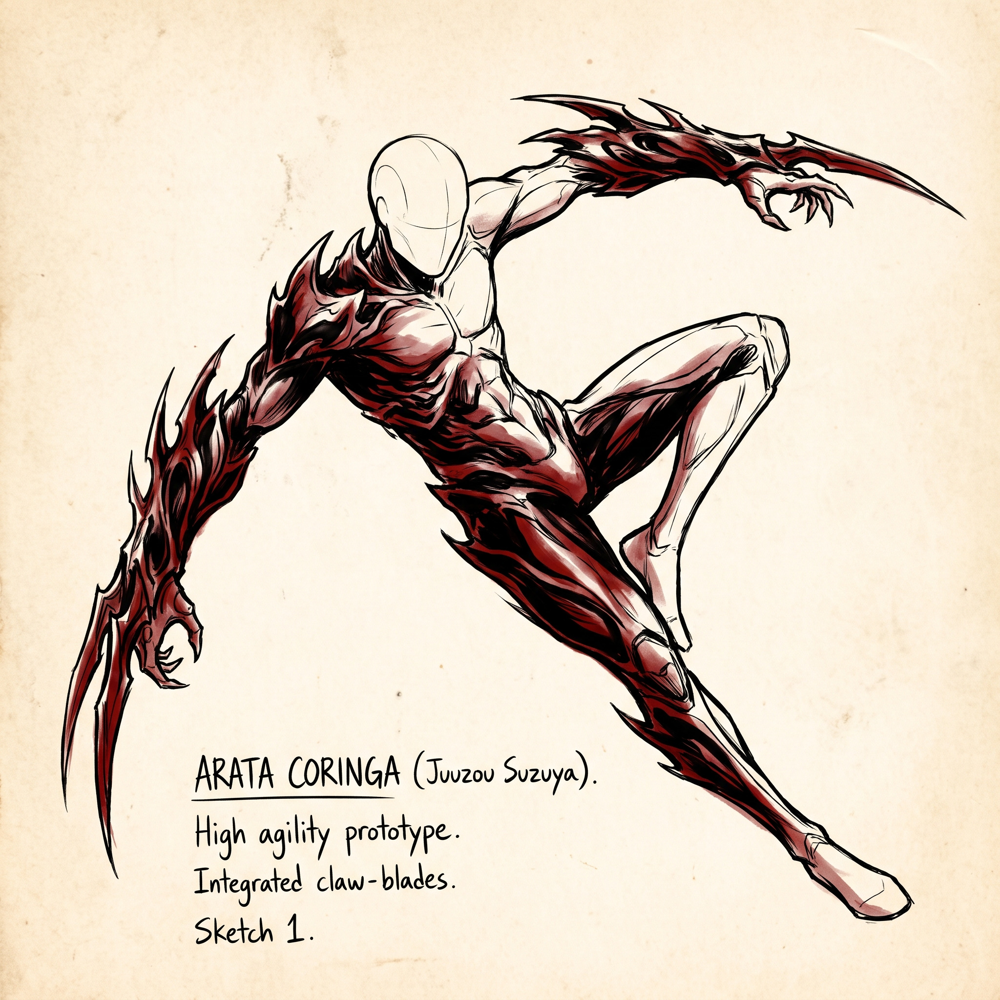
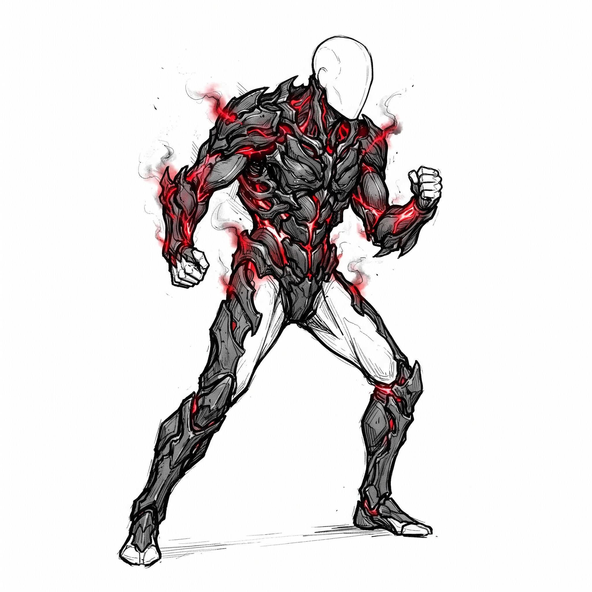

Resolução
Dois dados de dez faces determinam o resultado das ações.
Entre na noite. Escolha seu lado. Sobreviva ao instinto.
Noites em Tokyo é um RPG de horror, sobrevivência e conflito entre humanos e Ghouls.
Os jogadores podem interpretar indivíduos tentando sobreviver nas ruas de Tokyo ou Ghouls lutando contra a própria natureza predatória.
O sistema utiliza principalmente 2d10 + modificador para resolver ações, confrontos e situações de risco.
Dois dados de dez faces determinam o resultado das ações.
Células RC determinam o crescimento e o potencial dos Ghouls.
Quanto maior a fome, mais difícil se torna controlar o instinto.
Poder físico, golpes, agarrões e esforço corporal.
Velocidade, reflexos, esquiva e precisão.
Resistência física, vigor e capacidade de suportar dano.
Conhecimento, investigação, análise e raciocínio.
Percepção, instinto, leitura de situações e força mental.
Presença, influência, persuasão e interação social.
Representa o instinto predatório e a necessidade de consumir carne humana.
ATRIBUTO ESPECIAL| Valor | 0 | 1 | 2 | 3 | 4 | 5 | 6 | 7 | 8 | 9 | 10 |
|---|---|---|---|---|---|---|---|---|---|---|---|
| Mod. | -1 | +0 | +1 | +2 | +3 | +4 | +5 | +6 | +7 | +8 | +9 |
A criação de personagem em Noites em Tokyo é o processo de transformar um conceito em alguém capaz de existir dentro do mundo do RPG. Este capítulo explica a ordem das decisões e o significado de cada escolha.
Este manual não é uma ficha digital. Nenhum valor é preenchido aqui e nenhuma rolagem é realizada nesta página. O jogador utiliza as regras apresentadas neste capítulo para montar sua ficha fora do guia, conforme as orientações do Mestre.
Siga essa sequência para entender o personagem antes de começar a jogar.
Defina nome, aparência, personalidade, passado, objetivos e os vínculos que tornam o personagem uma pessoa dentro da história.
Estabeleça aquilo que o personagem deseja, aquilo que teme e o que estaria disposto a fazer para sobreviver em Tokyo.
Pense no papel que ele pretende desempenhar na campanha: combatente, investigador, sobrevivente, predador, aliado ou outra função narrativa.
Humanos dependem de suas capacidades, treinamento, recursos e equipamentos para enfrentar os perigos de Tokyo. Quando atuam pela CCG, podem seguir as regras de Investigadores e Quinques.
Ghouls possuem Kagune, utilizam RC como parte de sua evolução e precisam lidar com a Fome. Sua natureza altera profundamente a forma como sobrevivem e enfrentam o mundo.
A condição de Ghoul de Um Olho é determinada pelas regras próprias apresentadas no capítulo correspondente. Ela representa uma origem excepcional e traz vantagens e riscos próprios.
Para determinar se um Ghoul nasceu como Ghoul de Um Olho, utiliza-se 1d100. Um resultado de 96 a 100 indica a condição, correspondendo a uma chance de 5%. Essa rolagem é feita pelo jogador durante a criação, com os dados da mesa — nunca pelo site.
Um Ghoul de Um Olho recebe +2 em todos os atributos físicos, possui RC muito elevado, evolui mais rapidamente e chama mais atenção da CCG. Consulte o capítulo específico para as regras completas.
Os atributos representam as capacidades fundamentais do personagem. O sistema utiliza Força, Agilidade, Constituição, Inteligência, Sabedoria, Carisma e Fome. Cada valor possui um modificador que é utilizado nos testes de 2d10.
A distribuição dos valores iniciais segue o método de criação definido para a campanha pelo Mestre. Depois de definidos, os atributos não devem ser alterados arbitrariamente: eles são a base dos valores derivados, testes e especializações do personagem.
Representam capacidade corporal, velocidade, reflexos, resistência e capacidade de suportar esforço e ferimentos.
Representam conhecimento, percepção, julgamento, experiência e capacidade de compreender situações complexas.
Carisma representa presença e interação social. Fome representa o instinto predatório e o impulso que acompanha a natureza Ghoul.
Ghouls definem seu tipo de Kagune entre Ukaku, Koukaku, Rinkaku e Bikaku. Cada tipo possui características, vantagens e limitações próprias.
Investigadores seguem as regras da CCG para sua classe, treinamento e utilização de Quinques. Em casos excepcionais, um investigador selecionado por seus superiores também pode receber um Arata.
Humanos podem construir sua identidade a partir de treinamento, conhecimentos, equipamentos e vínculos estabelecidos na campanha.
A Classe de Armadura representa a dificuldade para atingir o personagem.
Representa a quantidade de dano que o personagem suporta antes de ficar incapacitado.
Representa o desgaste físico e a capacidade de continuar realizando esforços.
Determina a ordem em que os participantes agem quando um combate começa.
Ghouls acumulam Fome quando passam missões sem se alimentar. A Fome interfere no autocontrole e pode levar ao Frenesi.
O nível de RC acompanha a evolução de um Ghoul e determina seu estágio de desenvolvimento até a possibilidade de alcançar uma Kakuja.
A Sanidade representa a estabilidade mental diante de horror, violência, canibalismo, Fome e manifestações de Kakuja.
As escolhas mecânicas devem servir ao personagem, e não o contrário. Primeiro entenda quem ele é. Depois utilize as regras para representar esse conceito dentro do sistema. O Mestre pode ajudar a interpretar qualquer regra durante a criação.
Nem toda ação precisa de uma rolagem. Em Noites em Tokyo, os dados entram em cena quando existe uma possibilidade real de sucesso ou fracasso e o resultado pode alterar a situação da história. Se uma ação for simples, segura ou estiver claramente dentro das capacidades do personagem, o Mestre pode simplesmente determinar que ela acontece.
Quando houver incerteza, o sistema utiliza uma única estrutura central: 2d10 + modificador do atributo. O resultado é comparado com uma dificuldade definida pelo Mestre ou com o resultado de outro personagem.
Esta é a base para perseguições, investigação, furtividade, resistência, interação social, controle do instinto e qualquer outra situação que não possua uma regra específica mais detalhada.
Compare o resultado com a dificuldade estabelecida pelo Mestre ou com o resultado do personagem que está se opondo à ação.
Se não existe risco relevante, oposição ou pressão, o Mestre pode simplesmente narrar o resultado. O sistema não exige dados para cada pequena ação realizada durante a sessão.
Quando o resultado é incerto e pode mudar o rumo da cena, o Mestre escolhe o atributo apropriado e estabelece a dificuldade ou oposição.
Uma rolagem deve responder a uma pergunta importante. Evite pedir testes apenas porque uma regra existe. Se o resultado não importar, não há motivo para rolar.
Usada para levantar, quebrar, empurrar, agarrar e realizar ações que dependem principalmente de força bruta.
Usada para esquivas, equilíbrio, movimentos rápidos, ações precisas, furtividade física e iniciativa.
Usada para suportar esforço, ferimentos, exaustão e situações em que o corpo precisa continuar funcionando sob pressão.
Usada para analisar informações, investigar, deduzir, lembrar conhecimentos e compreender situações complexas.
Usada para perceber detalhes, interpretar situações, seguir a intuição e manter o julgamento diante de circunstâncias extremas.
Usada para convencer, negociar, intimidar, liderar, mentir ou influenciar outras pessoas.
É o atributo ligado à natureza Ghoul. Representa o impulso predatório e pode ser utilizado em situações relacionadas à Fome, ao instinto e ao domínio dessa natureza.
A mesma tarefa pode utilizar atributos diferentes dependendo de como o personagem tenta realizá-la. Um personagem que deseja obter uma informação pode usar Carisma para convencer alguém, Inteligência para deduzir a resposta ou Sabedoria para perceber uma mentira.
O Mestre deve considerar a abordagem apresentada pelo jogador, e não apenas o nome da ação. Isso permite que personagens diferentes resolvam o mesmo problema de maneiras distintas.
| NÍVEL | DT | REFERÊNCIA |
|---|---|---|
| Trivial | 6 | Ação extremamente simples ou quase garantida. |
| Fácil | 9 | Exige alguma atenção, mas está dentro das capacidades comuns. |
| Moderada | 12 | Desafio normal para um personagem competente. |
| Difícil | 15 | Exige treinamento, bons atributos ou uma boa abordagem. |
| Muito difícil | 18 | Desafio severo, em que uma falha é bastante provável. |
| Extrema | 21 | Feito para personagens altamente capazes. |
| Quase impossível | 24+ | Algo além do alcance normal da maioria dos personagens. |
A dificuldade não precisa ser escolhida mecanicamente em toda situação. O Mestre pode ajustá-la de acordo com condições, tempo disponível, equipamento, pressão, ambiente e outras circunstâncias relevantes.
Quando dois personagens disputam diretamente uma situação, ambos realizam um teste apropriado. O maior resultado vence o confronto.
O atributo depende da forma como cada participante age. Uma perseguição, por exemplo, pode colocar Agilidade contra Agilidade; um agarrão pode colocar Força contra Força ou Agilidade, conforme a situação.
Em caso de empate, nenhum dos lados obtém vantagem decisiva. O Mestre mantém a situação como está ou introduz uma nova circunstância que altere o confronto.
Uma circunstância claramente favorável concede +2 ao resultado final do teste.
Quando não existe uma condição especial alterando a situação, o teste é realizado normalmente.
Uma circunstância claramente desfavorável aplica −2 ao resultado final do teste.
Vantagens e desvantagens não devem se acumular indefinidamente. Quando uma situação já possui uma condição claramente favorável ou desfavorável, trate-a como vantagem ou desvantagem em vez de somar diversos modificadores iguais.
Se o resultado final alcançar ou superar a dificuldade, a ação é bem-sucedida.
Se o resultado final ficar abaixo da dificuldade, a ação falha. A consequência depende da situação e não precisa significar que nada aconteceu.
Dois resultados 10 formam um crítico: a ação é realizada de maneira excepcional. Em combate, os efeitos específicos do crítico são definidos no capítulo de Combate.
Dois resultados 1 formam uma falha crítica. Além da falha normal, o Mestre pode aplicar uma consequência adicional coerente com a cena.
Utilizada quando o personagem precisa suportar esforço, ferimentos, exaustão ou uma ameaça que afeta diretamente o corpo.
Utilizada para manter o julgamento e perceber situações que podem abalar a estabilidade do personagem.
Pode ser utilizada por Ghouls quando a situação envolve diretamente o impulso predatório, o cheiro de sangue ou a necessidade de controlar a própria natureza.
O termo Vontade pode aparecer na narrativa e em regras específicas para representar resistência e controle, mas não é um atributo adicional. Quando uma regra pedir um teste de Vontade, o Mestre deve utilizar o atributo indicado pela situação, normalmente Sabedoria para controle mental ou Fome quando o conflito for diretamente contra o instinto Ghoul.
Sanidade representa a capacidade de um personagem continuar racional diante de horror, violência extrema e experiências que ultrapassam aquilo que ele consegue processar. Ela não é um oitavo atributo e não substitui Sabedoria ou Fome. É uma consequência narrativa e mecânica das experiências vividas durante a campanha.
O Mestre pode considerar um teste de Sanidade quando o personagem presencia um horror significativo, passa por uma experiência traumática, presencia uma manifestação extrema de Kakuja ou enfrenta situações capazes de quebrar sua estabilidade. O teste utiliza 2d10 + modificador de Sabedoria, salvo quando uma regra específica indicar outra abordagem.
Uma falha não precisa significar perda imediata de controle. O Mestre pode representar o impacto através de medo, hesitação, perturbação, dificuldade de agir, lembranças traumáticas ou outras consequências coerentes com a personalidade do personagem.
A Fome pode tornar o controle mais difícil. Situações em que um Ghoul está próximo do Frenesi devem priorizar testes relacionados ao instinto e ao autocontrole.
O consumo de outro Ghoul pode representar um peso psicológico permanente. As consequências de Sanidade são determinadas conforme a gravidade do ato e o contexto da campanha.
Manifestações de Kakuja podem colocar a estabilidade do personagem em risco. Consulte o capítulo de Kakuja para as regras específicas de transformação e controle.
Um Ghoul precisa atravessar um beco enquanto investigadores patrulham a região. O Mestre considera a situação difícil e solicita um teste de Agilidade. O resultado é comparado à dificuldade determinada pela cena.
Um investigador procura sinais deixados por um Ghoul. Dependendo da abordagem, o Mestre pode solicitar Inteligência para analisar evidências ou Sabedoria para perceber detalhes que passariam despercebidos.
Um Ghoul sente o cheiro de sangue humano durante uma missão. Se o Mestre considerar que a Fome representa um risco real, pode solicitar um teste relacionado ao instinto para determinar se o personagem mantém o controle.
As regras existem para resolver situações, não para impedir a narrativa. Quando uma regra não contemplar perfeitamente uma situação, escolha a interpretação que melhor preserve a lógica do mundo, a diversão da mesa e a coerência de Noites em Tokyo.
O objetivo do teste é responder a uma pergunta: o personagem conseguiu fazer aquilo que tentou? Depois da resposta, a história continua.
O combate em Noites em Tokyo representa confrontos rápidos, perigosos e decisivos entre Ghouls, investigadores da CCG e qualquer outro personagem envolvido na cena.
As regras de combate utilizam a mesma base apresentada na Fase 3: 2d10 + modificador. O combate apenas organiza essas regras em uma sequência clara para que todos saibam quando agir, como atacar, como se defender e o que acontece quando alguém é ferido.
O site não executa nenhuma rolagem. Os dados são utilizados pelos jogadores e pelo Mestre durante a sessão.
O Mestre apresenta o local, os participantes, obstáculos, distâncias relevantes e qualquer condição que possa influenciar o confronto.
Cada participante realiza 2d10 + modificador de Agilidade. A ordem é determinada do maior resultado para o menor.
Em caso de empate, o personagem com maior modificador de Agilidade age primeiro. Se ainda houver empate, o Mestre decide a ordem ou determina uma nova forma simples de desempate.
A Classe de Armadura representa a dificuldade para atingir o personagem.
Representa quanto dano o personagem suporta antes de ficar incapacitado.
Representa o desgaste físico acumulado durante esforços e situações extremas.
Esse é o deslocamento-base de um personagem durante uma rodada.
Esses são os recursos básicos disponíveis em cada turno.
É determinada no início do confronto e define a ordem dos turnos.
O personagem pode realizar sua ação e se movimentar durante o turno. A reação normalmente é utilizada fora do próprio turno, quando uma situação permitir.
Uma rodada termina depois que todos os participantes tiveram seu turno. A ordem então recomeça no participante com a maior iniciativa.
Efeitos que duram até o início ou fim de um turno devem ser controlados pelo Mestre de acordo com essa sequência.
Realize um teste de ataque contra a CA do alvo. Se o resultado alcançar ou superar a CA, o ataque acerta e o dano é determinado.
O personagem concentra-se em sua defesa e recebe +2 CA até o início do seu próximo turno.
Ao utilizar sua ação para correr, o personagem dobra seu movimento naquele turno.
Tente restringir fisicamente um alvo usando um teste apropriado. O Mestre determina o atributo de acordo com a abordagem e a situação.
O personagem utiliza sua ação para se levantar quando estiver caído.
Manipule portas, objetos, equipamentos ou elementos do cenário quando isso exigir uma ação durante o combate.
Um personagem possui 6 metros de movimento por turno. O Mestre pode ajustar o deslocamento quando o terreno, uma condição, uma habilidade ou outro efeito justificar uma alteração.
O movimento pode ser dividido durante o turno. Um personagem pode, por exemplo, aproximar-se de um alvo, realizar sua ação e continuar se deslocando, desde que o movimento disponível permita.
Obstáculos, paredes, terreno difícil e diferenças de altura devem ser resolvidos pelo Mestre de acordo com a situação apresentada na cena.
O resultado é comparado à CA do alvo. Igualar a CA já é suficiente para acertar.
Pode representar golpes pesados, ataques corporais e outras ações que dependam diretamente de força física.
Pode representar ataques rápidos, precisos ou baseados em mobilidade e reflexos.
Técnicas, Kagunes, Quinques e habilidades especiais podem utilizar outros atributos quando sua descrição determinar isso.
É o dano básico de um ataque corporal sem arma ou Kagune.
O dano de equipamentos, Kagunes e técnicas é definido por suas próprias regras.
O dano sofrido é subtraído dos Pontos de Vida atuais do alvo.
Dois resultados 10 no 2d10 produzem um acerto crítico automático, mesmo que a soma normalmente não alcançasse a CA.
No acerto crítico, o dado de dano utilizado pelo ataque é considerado em seu valor máximo. Outros efeitos críticos podem ser definidos pela habilidade.
Dois resultados 1 representam uma falha crítica. O Mestre determina uma consequência coerente com a situação, sem criar punições arbitrárias.
Quando um ataque é realizado contra você, gaste sua reação para receber +2 CA contra aquele ataque.
Depois de sofrer dano, gaste sua reação para reduzir o dano sofrido em 1d6.
Cada personagem possui uma reação por rodada. Ela é recuperada no início do seu próximo turno.
Ao chegar a 0 Pontos de Vida, o personagem fica incapacitado. Ele não pode agir normalmente e precisa realizar testes de sobrevivência.
O estado incapacitado não significa necessariamente morte. O personagem ainda pode ser estabilizado ou eliminado conforme os resultados dos testes e o que acontecer na cena.
Enquanto incapacitado, o personagem realiza um teste de sobrevivência a cada turno, conforme determinação do Mestre. Três sucessos estabilizam o personagem; três falhas resultam em morte. Sofrer dano enquanto incapacitado adiciona automaticamente uma falha.
Fora de combate, um Ghoul pode recuperar 1d6 + modificador de Fome em Pontos de Vida, conforme as condições da cena.
A regeneração avançada e seus efeitos específicos devem ser consultados nas regras de RC e Kagune. A regeneração não elimina automaticamente consequências narrativas de ferimentos graves.
1. O Mestre apresenta a cena e define quem está envolvido.
2. Todos determinam a iniciativa.
3. O participante com maior iniciativa começa seu turno.
4. O personagem utiliza seu movimento, ação e, quando necessário, sua reação.
5. Ataques são resolvidos contra a CA e o dano é aplicado quando houver acerto.
6. O turno termina e o próximo participante age.
7. Depois que todos agirem, uma nova rodada começa.
O Mestre deve manter o combate rápido e compreensível. Quando uma situação não estiver descrita por uma regra específica, utilize a Fase 3 para determinar o teste mais adequado e resolva a situação de forma coerente com a ficção.
O Kagune é o órgão predatório dos Ghouls. Ele nasce do corpo, é alimentado por células RC e define boa parte da identidade de combate de um personagem. Neste capítulo, os quatro tipos são apresentados como estilos de combate, cada um com vantagens, limitações e uma posição própria no ciclo natural.
As regras de combate continuam sendo as mesmas apresentadas no capítulo de Combate: quando um Ghoul usa o Kagune para atacar, defender ou executar uma técnica, a resolução utiliza o sistema de 2d10 + modificador e as regras da ação realizada.
O Kagune é uma manifestação biológica sustentada pelas células RC do Ghoul. Seu uso está ligado ao estado físico, à Fome e ao desenvolvimento do personagem.
Ataques e ações realizadas com o Kagune seguem as regras normais do sistema. O tipo de Kagune determina a forma como o personagem se especializa, não substitui as regras básicas.
Ukaku, Koukaku, Rinkaku e Bikaku possuem identidades distintas. A escolha deve orientar o estilo de jogo do Ghoul e suas decisões em combate.
Nenhum Kagune é superior em todas as situações. Cada tipo possui uma fraqueza que deve ser considerada pelo jogador e pelo Mestre.

O Ukaku costuma surgir na região superior das costas. É leve, veloz e favorece Ghouls que preferem manter distância, controlar espaço e atacar antes que o inimigo consiga se aproximar.
Em combate: o Ukaku funciona melhor quando seu usuário controla a distância. A velocidade é sua maior vantagem, mas permanecer em combate corpo a corpo por longos períodos expõe sua principal limitação.

Extremamente resistente e pesado, o Koukaku pode assumir formas semelhantes a escudos, lâminas ou grandes estruturas defensivas. É o tipo indicado para Ghouls que preferem suportar pressão e vencer pela resistência.
Em combate: o Koukaku favorece posicionamento e proteção. Seu peso reduz a mobilidade, então seu usuário deve escolher bem quando avançar, recuar ou permanecer defendendo.

O Rinkaku surge geralmente na região lombar e pode formar múltiplas estruturas semelhantes a tentáculos. Seu poder ofensivo e sua capacidade regenerativa fazem dele um Kagune extremamente agressivo.
Em combate: o Rinkaku recompensa agressividade, mas sua instabilidade emocional deve ser levada a sério. Um Ghoul que perde o controle pode transformar uma vantagem ofensiva em uma situação perigosa para todos ao redor.

Geralmente surge na região inferior das costas e possui formato semelhante a uma cauda. O Bikaku é equilibrado e oferece ao usuário uma combinação consistente de força, mobilidade e alcance.
Em combate: o Bikaku não depende de uma única vantagem extrema. Ele funciona como uma escolha versátil para personagens que precisam se adaptar a diferentes adversários.
Ukaku > Bikaku · Bikaku > Rinkaku · Rinkaku > Koukaku · Koukaku > Ukaku. A vantagem natural representa superioridade situacional, não uma vitória automática.
O ciclo existe para representar a relação natural entre os quatro tipos de Kagune. Um Ghoul com vantagem ainda precisa acertar seus ataques, administrar sua posição e sobreviver às ações do adversário. Da mesma forma, estar em desvantagem não significa que o combate esteja perdido.
O Mestre deve tratar essa relação como um fator da cena. Terreno, distância, experiência, estado de Fome, condição física, uso de técnicas e decisões dos personagens continuam podendo alterar o rumo de um confronto.
O tipo de Kagune não define sozinho a personalidade ou o nível de poder de um Ghoul. Ele define uma base biológica e um estilo de combate. A evolução do personagem depende de sua história, RC, Fome, treinamento e das escolhas feitas durante a campanha.
Alguns indivíduos nascem como Ghouls de Um Olho, uma condição extremamente rara.
01–95: Ghoul comum
96–100: Ghoul de Um Olho
Recebe +2 em todos os atributos físicos.
Possui uma concentração de células RC superior.
Desenvolve seu potencial mais rapidamente.
Ghouls de Um Olho possuem maior probabilidade de chamar a atenção da CCG.
Cada missão realizada sem alimentação aumenta a Fome de um Ghoul em +1. Investigadores da CCG também possuem o atributo Fome, mas sua expressão é psicológica: a Fome de Caça mede o quanto a necessidade de encontrar e eliminar Ghouls domina o personagem.
Testes sociais podem sofrer penalidades quando a Fome está elevada.
O Mestre pode exigir testes para evitar atacar humanos próximos.
Fome elevada reduz a recuperação de RC.
Em níveis extremos, um teste de Vontade pode ser exigido para evitar o Frenesi.
As células RC representam a capacidade biológica de um Ghoul. Elas influenciam sua força, evolução e capacidade de desenvolver uma Kakuja.
| RC | Classificação |
|---|---|
| 0–999 | Ghoul Iniciante |
| 1.000–2.999 | Ghoul Experiente |
| 3.000–5.999 | Ghoul Forte |
| 6.000–9.999 | Elite |
| 10.000–14.999 | Semi-Kakuja |
| 15.000+ | Kakuja Completa |
| Alvo | RC |
|---|---|
| Cadáver em estado ruim | 20 |
| Humano desnutrido | 30 |
| Humano comum | 50 |
| Humano saudável | 60 |
| Atleta / Militar | 75 |
| Investigador CCG | 100 |
| Ghoul consumido | RC |
|---|---|
| Ghoul Fraco | 150 |
| Rank C | 200 |
| Rank B | 300 |
| Rank A | 450 |
| Rank SS | 700 |
| Rank SSS | 1.000 |
Consumir outros Ghouls oferece muito mais RC, porém pode causar danos permanentes à Sanidade e prejudicar a reputação do personagem entre outros Ghouls.
A Kakuja é uma evolução anormal do Kagune causada pelo acúmulo e mutação de células RC.
O processo geralmente está relacionado ao consumo repetido de outros Ghouls.
Quanto maior o acúmulo de RC, maior o potencial da transformação — mas também maior pode ser o conflito entre consciência e instinto.

A primeira manifestação da transformação. O Kagune começa a se espalhar pelo corpo, formando placas, lâminas, membros adicionais ou outras estruturas orgânicas.
A transformação ainda é instável e pode ser difícil de controlar.

Neste estágio, o Kagune deixa de ser apenas uma extensão do corpo e passa a formar uma estrutura de combate integrada.
A manifestação pode cobrir grande parte do corpo, criando uma verdadeira armadura viva.

O estágio máximo da evolução. O Kagune pode assumir uma forma gigantesca, monstruosa e altamente especializada.
A anatomia humana pode ser parcialmente abandonada em favor de estruturas criadas exclusivamente para caça e combate.
Ao ativar a Semi-Kakuja, o personagem deve realizar um teste de Vontade.
Em caso de sucesso, mantém o controle. Em caso de falha, entra em Frenesi.
Durante o Frenesi, o personagem não consegue distinguir aliados de inimigos e ataca qualquer criatura próxima. O Mestre controla suas ações até o fim da transformação.
Ghouls iniciam sua trajetória no Rank C e podem evoluir conforme sobrevivem, acumulam experiência e aumentam seu potencial.
Fome continua sendo um dos sete atributos do sistema. O que muda é sua manifestação. Para um Ghoul, ela representa a necessidade biológica de se alimentar. Para um investigador da CCG, representa o ímpeto predatório de caçar: a pressão psicológica que nasce quando um alvo escapa, uma equipe é ferida ou uma ameaça passa a ser pessoal.
A motivação existe, mas permanece subordinada à disciplina e à missão.
O investigador passa a observar sinais e padrões do alvo com atenção acima do normal.
A perseguição começa a dominar suas decisões. Testes diretamente ligados ao alvo recebem +1.
O alvo ocupa o centro da operação. Testes diretamente ligados a ele recebem +2, mas ações não relacionadas sofrem -1 quando a oportunidade de persegui-lo está presente.
O investigador ultrapassou o limite saudável. Recebe +2 contra o alvo, mas sofre -2 em ações não relacionadas enquanto puder continuar a perseguição.
A Fome nunca pode ultrapassar 5. O Mestre deve escolher o aumento que melhor representa o impacto narrativo da cena, evitando acumular vários gatilhos pelo mesmo acontecimento.
A redução representa controle psicológico. Ela não depende de RC, alimentação ou recuperação física.
Em Fome 4, o Mestre pode exigir um teste de 2d10 + modificador de Sabedoria para abandonar uma perseguição importante quando o alvo ainda estiver acessível. Em Fome 5, o teste é obrigatório sempre que o investigador tiver uma oportunidade clara de continuar a caça.
A Fome não transforma automaticamente o personagem em um aliado do inimigo ou em um assassino irracional. Ela cria compulsão e conflito. A interpretação continua pertencendo ao jogador, exceto quando uma regra de controle for acionada.
Converte a pressão em agressividade e perseguição. Em Fome 3+, o bônus contra o alvo pode ser aplicado a ataques e testes de perseguição.
A obsessão aparece como necessidade de entender o inimigo. Em Fome 3+, o bônus pode favorecer testes de análise e identificação ligados ao alvo.
É o arquétipo mais naturalmente alinhado à Fome de Caça. A pressão se manifesta como insistência em localizar e impedir a fuga.
A Fome assume a forma de eliminação. O investigador tende a preferir confronto e contenção quando o alvo está ao alcance.
A obsessão pode se voltar para a própria técnica. O investigador quer provar que seu equipamento é capaz de vencer aquele alvo.
A Fome pode se tornar necessidade de vencer a missão. O risco é sacrificar posicionamento, tempo ou aliados para não deixar a presa escapar.
Quanto maior a Fome de Caça, mais eficiente o investigador pode se tornar contra seu alvo — e mais fácil é esquecer todo o resto. O atributo deve recompensar a tensão dramática sem substituir a disciplina, o trabalho em equipe ou a estratégia.
O arquétipo representa a formação principal do investigador dentro da CCG. Ele não determina a personalidade do personagem nem impede outras formas de agir: define, principalmente, onde aquele investigador recebeu treinamento e em que tipo de operação sua presença é mais valiosa.
Cada arquétipo possui uma função, pontos fortes, limitações e um Quinque inicial. O Quinque reforça a identidade do arquétipo, mas não transforma o investigador em uma classe fechada. Com treinamento, experiência e autorização da CCG, o personagem pode aprimorar, modificar ou substituir seu equipamento.
Combate direto, perseguição e adaptação.
É o investigador preparado para entrar no território Ghoul e continuar operando quando o plano inicial deixa de existir. Aprende a alternar rapidamente entre ataque, defesa, perseguição e proteção de aliados.
Informação, leitura de padrões e suporte tático.
O Analista transforma evidências em decisões. Seu treinamento prioriza observação, interpretação de cenas, identificação de padrões de comportamento e reconhecimento das características de uma Kagune.
Localização, perseguição, reconhecimento e emboscada.
O Rastreador é treinado para encontrar um alvo que não quer ser encontrado. Trabalha com rotas, sinais, hábitos e movimentação urbana, criando as condições para que a CCG escolha quando e onde o confronto acontecerá.
Combate pesado, contenção e eliminação.
O Executor é enviado quando a CCG precisa de alguém capaz de enfrentar fisicamente uma ameaça de alto risco. Seu treinamento favorece resistência, impacto, controle de espaço e pressão frontal.
Técnica, precisão e domínio absoluto do equipamento.
O Especialista constrói seu estilo ao redor do Quinque. Em vez de depender apenas de atributos físicos, aprende configurações, sequências e aplicações específicas de sua arma até transformá-la em uma extensão do próprio corpo.
Coordenação, liderança e controle do campo.
O Comandante transforma investigadores individuais em uma unidade. Seu treinamento prioriza leitura do campo, posicionamento, ordens rápidas e criação de oportunidades para os companheiros.
Escolher um arquétipo não cria um conjunto de ações obrigatórias. O investigador continua utilizando as regras gerais de testes, combate e investigação. A diferença está no tipo de situação em que seu treinamento oferece maior eficiência e nas técnicas associadas ao seu Quinque inicial.
Em termos de jogo, o Mestre deve recompensar a especialização quando ela fizer sentido na ficção. Um Rastreador seguindo uma trilha, um Analista examinando evidências ou um Comandante coordenando sua equipe estão atuando exatamente dentro daquilo que seu arquétipo representa.
Todo investigador começa com acesso a um Quinque compatível com sua formação inicial. Os modelos abaixo são equipamentos de entrada: possuem uma identidade clara, uma função definida e uma técnica característica, mas continuam sujeitos às regras gerais de combate.
A origem biológica de cada Quinque define sua natureza. O sistema não trata essa origem como uma simples etiqueta de dano: ela orienta a forma como a arma se comporta, quais situações favorece e quais limitações o usuário precisa respeitar.

Bikaku · Lâmina equilibrada
Uma lâmina escura e versátil, desenvolvida para adaptação rápida entre ofensiva, defesa e controle do adversário.
Característica — Corte Adaptável: o usuário pode alternar entre uma postura ofensiva, defensiva ou de controle sem abandonar a arma.
Técnica — Lua Crescente: um corte amplo que mantém pressão sobre o alvo enquanto preserva uma distância segura.

Ukaku · Dispositivo modular
Um Quinque de médio alcance projetado para precisão e coleta de dados durante o combate. Sua configuração favorece investigadores que precisam observar antes de concluir.
Característica — Leitura de Combate: depois de observar o inimigo, o Analista pode identificar padrões de ataque, movimento ou comportamento.
Técnica — Marcação: registra um alvo para que a equipe consiga acompanhar sua posição e seus padrões com maior facilidade.

Rinkaku · Lâmina flexível
Uma lâmina flexível de alcance variável, capaz de atacar de ângulos incomuns e limitar a movimentação de um alvo em fuga.
Característica — Alcance Variável: pode atuar em curta ou média distância e também interagir com obstáculos e alvos fora do alcance de uma lâmina comum.
Técnica — Laço do Caçador: utiliza a estrutura flexível para restringir o movimento do alvo e impedir uma fuga.

Koukaku · Machado de impacto
Uma arma pesada criada para resistir a confrontos violentos. Sua estrutura permite ao Executor tratar o próprio Quinque como arma e proteção ao mesmo tempo.
Característica — Guarda Pesada: o usuário pode assumir uma postura de proteção, utilizando a massa do Quinque para aparar ataques e manter posição.
Técnica — Impacto Carmesim: concentra força em um golpe de grande impacto, ideal para romper defesas ou interromper uma ofensiva.

Híbrido · Arma transformável
Um Quinque mutável que alterna entre configurações de lâmina, lança e guarda. Foi desenvolvido para ser dominado por um único usuário ao longo de sua carreira.
Característica — Transformação: o investigador pode alterar a configuração do Kagami para responder à distância, à defesa ou ao espaço disponível.
Técnica — Sequência Perfeita: encadeia configurações diferentes em uma sequência de ataques, transformando domínio técnico em vantagem durante o combate.

Bikaku · Lança de comando
Uma lança de alcance controlado projetada para combate e coordenação. O núcleo do Quinque possui sinais visuais utilizados para comunicação rápida em campo.
Característica — Comando de Campo: o Comandante pode transmitir ordens simples e coordenar o posicionamento dos investigadores próximos.
Técnica — Formação CCG: organiza os aliados em uma formação de combate, reduzindo brechas e favorecendo ações coordenadas.
O Quinque inicial representa familiaridade básica. Conforme o investigador acumula experiência, o Mestre pode permitir evolução de domínio, novas técnicas, modificações estruturais ou até a substituição do equipamento por um modelo mais adequado à sua trajetória.
Utiliza as funções básicas do Quinque.
Desbloqueia aplicações e técnicas intermediárias.
Explora plenamente a identidade do equipamento.
Desenvolve técnicas próprias a partir do Quinque.
O equipamento se torna uma extensão do estilo do investigador.
Aratas são armaduras biológicas desenvolvidas a partir de Ghouls. A tecnologia permite ampliar as capacidades físicas de um investigador, oferecendo uma vantagem brutal contra inimigos que normalmente estariam além das capacidades humanas.
Um Arata não é um equipamento comum. Seu uso depende da seleção pelos superiores da CCG e do histórico do investigador. Apenas demonstrar força não significa receber um: a organização precisa considerar o investigador capaz de suportar o risco da armadura.
O mesmo poder que fortalece o investigador pode destruí-lo. Aratas exigem resistência física suficiente para suportar sua atividade biológica. Um usuário inadequado pode sofrer uma sobrecarga severa, fazendo a armadura consumir seu próprio corpo.

Modelo experimental de Arata, criado para ampliar drasticamente as capacidades físicas do investigador. Sua estrutura demonstra a natureza agressiva da tecnologia e o risco de sobrecarga.

Uma evolução voltada para alta defesa. A blindagem biológica reforçada aumenta a capacidade de suportar confrontos diretos, mas continua exigindo um usuário fisicamente resistente.

Um modelo de alta agilidade, projetado para acompanhar investigadores que dependem de mobilidade e ataques rápidos. Sua configuração incorpora lâminas orgânicas integradas.

Modelo intermediário da linha Proto, com maior integração entre a estrutura biológica e o corpo do investigador. Sua configuração amplia o potencial físico da armadura sem abandonar o caráter experimental.
O guia apresenta os Aratas como parte do equipamento avançado da CCG. O jogador não escolhe um Arata livremente durante a criação: a obtenção depende da narrativa, da autorização dos superiores e da capacidade do investigador de suportar a armadura.
Os bônus específicos de cada modelo devem ser definidos pela campanha e pelo Mestre. Quando forem utilizados, o risco de sobrecarga deve acompanhar a resistência do usuário, mantendo o Arata como uma vantagem poderosa, mas perigosa.
A CCG começa reunindo informações sobre atividades suspeitas.
Evidências suficientes podem revelar o tipo de Kagune utilizado.
Exames podem estimar a concentração de células RC.
Um Ghoul conhecido pode receber um codinome oficial.
A quantidade de informações permite estimar o nível de perigo.
Quando o alvo é confirmado, uma operação pode ser iniciada.